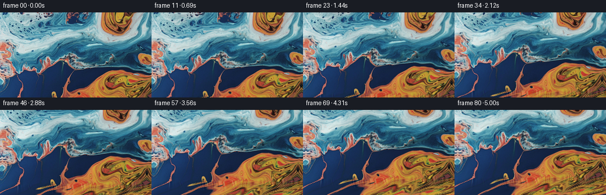
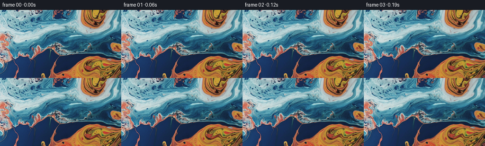

CODING AGENTS AS PIXEL WORLD MODELS
traex/GPT-6.1-Sol · 0004_s3
点击播放 · 原生 RGB 像素
逐轮保存的候选
回放视频、检查图与代码变化。
每份候选均可单独播放。实际图片检查记录在下方工具轨迹中。
候选 01播放与检查图
点击播放 · 原生 RGB 像素


展开代码变化
--- 上一保存版本
+++ 本次保存版本
@@ -0,0 +1,177 @@
+"""A photograph-anchored macro liquid shot, rendered with smooth fluid advection.
+
+No external assets: the liquid's color, fine structure and reflected light come
+from first_frame.png. A continuous camera pitch is combined with a solenoidal
+flow and small traveling surface waves, all sampled in liquid-world space.
+"""
+from pathlib import Path
+import numpy as np
+from PIL import Image
+import artifact_io
+
+ROOT = Path(__file__).resolve().parent
+
+
+def reflect(q, n):
+ q = np.mod(q, 2.0 * (n-1))
+ return np.where(q <= n-1, q, 2.0*(n-1)-q)
+
+
+def bilinear(a, x, y):
+ x = np.clip(x, 0, a.shape[1]-1.001)
+ y = np.clip(y, 0, a.shape[0]-1.001)
+ ix, iy = x.astype(np.int32), y.astype(np.int32)
+ fx, fy = (x-ix)[..., None], (y-iy)[..., None]
+ return (a[iy, ix]*(1-fx)*(1-fy) + a[iy, ix+1]*fx*(1-fy)
+ + a[iy+1, ix]*(1-fx)*fy + a[iy+1, ix+1]*fx*fy)
+
+
+def cubic_weights(f):
+ f2, f3 = f*f, f*f*f
+ return (-.5*f + f2 - .5*f3, 1-2.5*f2+1.5*f3,
+ .5*f+2*f2-1.5*f3, -.5*f2+.5*f3)
+
+
+def bicubic(a, x, y):
+ ix, iy = np.floor(x).astype(np.int32), np.floor(y).astype(np.int32)
+ wx, wy = cubic_weights(x-ix), cubic_weights(y-iy)
+ out = np.zeros(x.shape+(3,), np.float32)
+ for j in range(4):
+ yy = np.clip(iy+j-1, 0, a.shape[0]-1)
+ for k in range(4):
+ xx = np.clip(ix+k-1, 0, a.shape[1]-1)
+ out += a[yy, xx]*(wy[j]*wx[k])[..., None]
+ return out
+
+
+def make_world(photo):
+ # A small overscan continuation. The reflected boundary is sheared so that
+ # the orange pool naturally broadens towards the bottom, rather than
+ # producing a repeated horizontal mirror image.
+ h, w = photo.shape[:2]
+ yy, xx = np.mgrid[-40:h+100, -70:w+70].astype(np.float32)
+ depth = np.maximum(yy-(h-1), 0)
+ growth = 1-np.exp(-depth/11)
+ sx = xx + 2.35*depth + growth*(3.4*np.sin(xx/43+depth/23))
+ sy = yy.copy()
+ below = yy > h-1
+ sy[below] = h-1-depth[below] + 2.3*growth[below]*np.sin(xx[below]/47+depth[below]/19)
+ out = bilinear(photo, reflect(sx,w), reflect(sy,h))
+ # Match first derivatives over the first few overscan rows. This removes
+ # the straight boundary crease that a simple reflection would produce.
+ edge_gradient = np.clip((photo[-1]-photo[-3])*.5, -10, 10)
+ gx = reflect(xx, w)
+ idx = np.floor(gx).astype(np.int32)
+ fr = (gx-idx)[...,None]
+ gradient = edge_gradient[idx]*(1-fr) + edge_gradient[np.minimum(idx+1,w-1)]*fr
+ out += gradient*(2*depth*np.exp(-depth/3.1)*below)[...,None]
+ # Explicitly restore every original source pixel.
+ out[40:40+h,70:70+w] = photo
+ return np.clip(out,0,255).astype(np.float32)
+
+
+def velocity(x,y,t):
+ # Vorticity is distributed over broad, overlapping eddies. The field is
+ # divergence-free, so colored liquid domains roll rather than inflate.
+ u=np.zeros_like(x)
+ v=np.zeros_like(y)
+ eddies = [(173,75,64,.042,.3), (188,17,39,-.061,1.1),
+ (43,49,56,-.030,2.2), (174,155,68,-.041,.7),
+ (86,128,39,.030,1.8)]
+ for cx,cy,r,omega,phase in eddies:
+ dx,dy=x-cx,y-cy
+ rate=omega*(.86+.14*np.sin(.75*t+phase))
+ w=rate*np.exp(-(dx*dx+dy*dy)/(2*r*r))
+ u -= dy*w
+ v += dx*w
+ # A long-wave stream function supplies gentle shear between the eddies.
+ p=.024*x+.036*y-.37*t
+ u += .55*np.sin(p)
+ v -= (.024/.036)*.55*np.sin(p)
+ return u,v
+
+
+def advect_back(x,y,t):
+ # Midpoint integration of the time-dependent inverse flow.
+ steps = max(2, int(np.ceil(t/.24)))
+ dt=t/steps
+ a,b=x.copy(),y.copy()
+ time=t
+ for _ in range(steps):
+ u,v=velocity(a,b,time)
+ um,vm=velocity(a-.5*dt*u,b-.5*dt*v,time-.5*dt)
+ a-=dt*um
+ b-=dt*vm
+ time-=dt
+ return a,b
+
+
+def render():
+ first = np.asarray(Image.open(ROOT/'first_frame.png').convert('RGB'), dtype=np.uint8)
+ h,w=first.shape[:2]
+ assert (h,w)==(144,256)
+ world=make_world(first.astype(np.float32))
+ yy,xx=np.mgrid[0:h,0:w].astype(np.float32)
+ cx,cy=(w-1)/2,(h-1)/2
+ frames=[first.copy()]
+ duration=80/16
+ for i in range(1,81):
+ t=i/16
+ q=t/duration
+ ease=q*q*(3-2*q)
+ # A genuine downward camera pitch (inverse pinhole projection).
+ pitch=.108*ease
+ focal=270.
+ c,s=np.cos(pitch),np.sin(pitch)
+ ny=(yy-cy)/focal
+ denom=c-ny*s
+ sx=cx+(xx-cx)/denom
+ sy=cy+focal*(ny*c+s)/denom
+ # Very mild macro-camera lateral drift, no cuts or zoom pulses.
+ sx += .85*np.sin(.40*t)
+ a,b=advect_back(sx,sy,t)
+ # Surface ripples are traveling, low-amplitude refractive waves.
+ # Subtract their initial displacement to anchor the supplied image.
+ ripple_x=np.zeros_like(a)
+ ripple_y=np.zeros_like(b)
+ wave_params=[(.15,.115,1.07,.72,.3),
+ (.072,-.16,.81,.63,1.4),
+ (.255,.065,1.38,.28,2.5),
+ (.032,.055,.44,1.35,.8)]
+ for kx,ky,omega,amplitude,phase in wave_params:
+ ph=kx*a+ky*b+phase
+ delta=np.sin(ph-omega*t)-np.sin(ph)
+ k=np.hypot(kx,ky)
+ ripple_x += amplitude*(ky/k)*delta
+ ripple_y -= amplitude*(kx/k)*delta
+ a+=ripple_x
+ b+=ripple_y
+ image=bicubic(world,a+70,b+40)
+ # Moving reflected light follows the waves; preserve the source's
+ # photographically captured highlights and dark blue depth.
+ ph=.093*a+.12*b
+ light=.018*(np.sin(ph-.94*t)-np.sin(ph))
+ ph2=.027*a-.053*b+1.7
+ light+=.009*(np.sin(ph2+.63*t)-np.sin(ph2))
+ luminance=image.mean(-1)
+ bright=np.clip((luminance-100)/120,0,1)
+ modulation=light*(.65+.65*bright)
+ image*=1+modulation[...,None]
+ # Tiny cold/warm reflection shifts are most visible on the silver-blue
+ # liquid and remain absent from saturated orange pigment.
+ cool=np.clip((image[...,2]-image[...,0])/80,0,1)
+ gleam=.65*cool*(np.sin(.065*a+.07*b-.6*t)-np.sin(.065*a+.07*b))
+ image[...,1]+=.65*gleam
+ image[...,2]+=gleam
+ frames.append(np.clip(np.rint(image),0,255).astype(np.uint8))
+ return np.stack(frames)
+
+
+if __name__=='__main__':
+ frames=render()
+ np.save(ROOT/'candidate_frames.npy',frames)
+ artifact_io.save(frames,ROOT)
+ print('Saved', frames.shape, frames.dtype)
+ print('Frame 00 exact:', np.array_equal(frames[0],np.array(Image.open(ROOT/'first_frame.png').convert('RGB'))))
+ dif=np.abs(np.diff(frames.astype(np.int16),axis=0))
+ print('Adjacent-frame mean RGB differences:', dif.mean(axis=(1,2,3)).min(),dif.mean(axis=(1,2,3)).mean(),dif.mean(axis=(1,2,3)).max())
可观测工具轨迹
实际执行的命令与返回图片。
命令 1exit 0
/bin/bash -lc 'ls -la && cat prompt.txt && cat GENERATION_RULES.md'
命令 2exit 0
/bin/bash -lc "cat task_spec.json && cat artifact_io.py && python - <<'PY'
from PIL import Image
import numpy as np
im=np.array(Image.open('first_frame.png').convert('RGB'))
print('shape',im.shape,'min/max',im.min((0,1)),im.max((0,1)))
print('mean',im.mean((0,1)), 'std',im.std((0,1)))
a=np.array(Image.fromarray(im).resize((64,36)))
# colors classified by strongest hues and intensity, ascii image
for row in a:
s=''
for r,g,b in row.astype(float):
if max(r,g,b)<30:c=' '
elif r>b*1.5 and r>g*1.15:c='O' if r>130 else 'o'
elif b>r*1.4 and b>g*1.1:c='B' if b>110 else 'b'
elif b>r*1.3 and g>r*1.3:c='C' if b>120 else 'c'
elif r>g*1.1 and r>b*1.1:c='r'
elif max(r,g,b)-min(r,g,b)<20:c='W' if max(r,g,b)>170 else '.'
else:c='x'
s+=c
print(s)
print('grid means 16x9')
for row in np.array(Image.fromarray(im).resize((16,9))): print([tuple(x) for x in row])
PY"命令 3exit 0
/bin/bash -lc "python - <<'PY'
import numpy as np
from PIL import Image
im=np.array(Image.open('first_frame.png').convert('RGB'))
# detailed brightness/chroma maps to discern liquids vs hard edges
for mode in ['lum','blue','warm']:
a=np.array(Image.fromarray(im).resize((96,54))).astype(float)
if mode=='lum': v=a.mean(-1)/256
elif mode=='blue': v=np.clip((a[:,:,2]-a[:,:,0]+30)/170,0,1)
else:v=np.clip((a[:,:,0]-a[:,:,2]+15)/150,0,1)
chars=' .:-=+*#%@'
print('\\n',mode)
for row in v: print(''.join(chars[min(9,int(x*10))] for x in row))
PY"命令 4exit 0
/bin/bash -lc "cat > generate.py <<'PY'
\"\"\"A photograph-anchored macro liquid shot, rendered with smooth fluid advection.
No external assets: the liquid's color, fine structure and reflected light come
from first_frame.png. A continuous camera pitch is combined with a solenoidal
flow and small traveling surface waves, all sampled in liquid-world space.
\"\"\"
from pathlib import Path
import numpy as np
from PIL import Image
import artifact_io
ROOT = Path(__file__).resolve().parent
def reflect(q, n):
q = np.mod(q, 2.0 * (n-1))
return np.where(q <= n-1, q, 2.0*(n-1)-q)
def bilinear(a, x, y):
x = np.clip(x, 0, a.shape[1]-1.001)
y = np.clip(y, 0, a.shape[0]-1.001)
ix, iy = x.astype(np.int32), y.astype(np.int32)
fx, fy = (x-ix)[..., None], (y-iy)[..., None]
return (a[iy, ix]*(1-fx)*(1-fy) + a[iy, ix+1]*fx*(1-fy)
+ a[iy+1, ix]*(1-fx)*fy + a[iy+1, ix+1]*fx*fy)
def cubic_weights(f):
f2, f3 = f*f, f*f*f
return (-.5*f + f2 - .5*f3, 1-2.5*f2+1.5*f3,
.5*f+2*f2-1.5*f3, -.5*f2+.5*f3)
def bicubic(a, x, y):
ix, iy = np.floor(x).astype(np.int32), np.floor(y).astype(np.int32)
wx, wy = cubic_weights(x-ix), cubic_weights(y-iy)
out = np.zeros(x.shape+(3,), np.float32)
for j in range(4):
yy = np.clip(iy+j-1, 0, a.shape[0]-1)
for k in range(4):
xx = np.clip(ix+k-1, 0, a.shape[1]-1)
out += a[yy, xx]*(wy[j]*wx[k])[..., None]
return out
def make_world(photo):
# A small overscan continuation. The reflected boundary is sheared so that
# the orange pool naturally broadens towards the bottom, rather than
# producing a repeated horizontal mirror image.
h, w = photo.shape[:2]
yy, xx = np.mgrid[-40:h+100, -70:w+70].astype(np.float32)
depth = np.maximum(yy-(h-1), 0)
growth = 1-np.exp(-depth/11)
sx = xx + 2.35*depth + growth*(3.4*np.sin(xx/43+depth/23))
sy = yy.copy()
below = yy > h-1
sy[below] = h-1-depth[below] + 2.3*growth[below]*np.sin(xx[below]/47+depth[below]/19)
out = bilinear(photo, reflect(sx,w), reflect(sy,h))
# Match first derivatives over the first few overscan rows. This removes
# the straight boundary crease that a simple reflection would produce.
edge_gradient = np.clip((photo[-1]-photo[-3])*.5, -10, 10)
gx = reflect(xx, w)
idx = np.floor(gx).astype(np.int32)
fr = (gx-idx)[...,None]
gradient = edge_gradient[idx]*(1-fr) + edge_gradient[np.minimum(idx+1,w-1)]*fr
out += gradient*(2*depth*np.exp(-depth/3.1)*below)[...,None]
# Explicitly restore every original source pixel.
out[40:40+h,70:70+w] = photo
return np.clip(out,0,255).astype(np.float32)
def velocity(x,y,t):
# Vorticity is distributed over broad, overlapping eddies. The field is
# divergence-free, so colored liquid domains roll rather than inflate.
u=np.zeros_like(x)
v=np.zeros_like(y)
eddies = [(173,75,64,.042,.3), (188,17,39,-.061,1.1),
(43,49,56,-.030,2.2), (174,155,68,-.041,.7),
(86,128,39,.030,1.8)]
for cx,cy,r,omega,phase in eddies:
dx,dy=x-cx,y-cy
rate=omega*(.86+.14*np.sin(.75*t+phase))
w=rate*np.exp(-(dx*dx+dy*dy)/(2*r*r))
u -= dy*w
v += dx*w
# A long-wave stream function supplies gentle shear between the eddies.
p=.024*x+.036*y-.37*t
u += .55*np.sin(p)
v -= (.024/.036)*.55*np.sin(p)
return u,v
def advect_back(x,y,t):
# Midpoint integration of the time-dependent inverse flow.
steps = max(2, int(np.ceil(t/.24)))
dt=t/steps
a,b=x.copy(),y.copy()
time=t
for _ in range(steps):
u,v=velocity(a,b,time)
um,vm=velocity(a-.5*dt*u,b-.5*dt*v,time-.5*dt)
a-=dt*um
b-=dt*vm
time-=dt
return a,b
def render():
first = np.asarray(Image.open(ROOT/'first_frame.png').convert('RGB'), dtype=np.uint8)
h,w=first.shape[:2]
assert (h,w)==(144,256)
world=make_world(first.astype(np.float32))
yy,xx=np.mgrid[0:h,0:w].astype(np.float32)
cx,cy=(w-1)/2,(h-1)/2
frames=[first.copy()]
duration=80/16
for i in range(1,81):
t=i/16
q=t/duration
ease=q*q*(3-2*q)
# A genuine downward camera pitch (inverse pinhole projection).
pitch=.108*ease
focal=270.
c,s=np.cos(pitch),np.sin(pitch)
ny=(yy-cy)/focal
denom=c-ny*s
sx=cx+(xx-cx)/denom
sy=cy+focal*(ny*c+s)/denom
# Very mild macro-camera lateral drift, no cuts or zoom pulses.
sx += .85*np.sin(.40*t)
a,b=advect_back(sx,sy,t)
# Surface ripples are traveling, low-amplitude refractive waves.
# Subtract their initial displacement to anchor the supplied image.
ripple_x=np.zeros_like(a)
ripple_y=np.zeros_like(b)
wave_params=[(.15,.115,1.07,.72,.3),
(.072,-.16,.81,.63,1.4),
(.255,.065,1.38,.28,2.5),
(.032,.055,.44,1.35,.8)]
for kx,ky,omega,amplitude,phase in wave_params:
ph=kx*a+ky*b+phase
delta=np.sin(ph-omega*t)-np.sin(ph)
k=np.hypot(kx,ky)
ripple_x += amplitude*(ky/k)*delta
ripple_y -= amplitude*(kx/k)*delta
a+=ripple_x
b+=ripple_y
image=bicubic(world,a+70,b+40)
# Moving reflected light follows the waves; preserve the source's
# photographically captured highlights and dark blue depth.
ph=.093*a+.12*b
light=.018*(np.sin(ph-.94*t)-np.sin(ph))
ph2=.027*a-.053*b+1.7
light+=.009*(np.sin(ph2+.63*t)-np.sin(ph2))
luminance=image.mean(-1)
bright=np.clip((luminance-100)/120,0,1)
modulation=light*(.65+.65*bright)
image*=1+modulation[...,None]
# Tiny cold/warm reflection shifts are most visible on the silver-blue
# liquid and remain absent from saturated orange pigment.
cool=np.clip((image[...,2]-image[...,0])/80,0,1)
gleam=.65*cool*(np.sin(.065*a+.07*b-.6*t)-np.sin(.065*a+.07*b))
image[...,1]+=.65*gleam
image[...,2]+=gleam
frames.append(np.clip(np.rint(image),0,255).astype(np.uint8))
return np.stack(frames)
if __name__=='__main__':
frames=render()
np.save(ROOT/'candidate_frames.npy',frames)
artifact_io.save(frames,ROOT)
print('Saved', frames.shape, frames.dtype)
print('Frame 00 exact:', np.array_equal(frames[0],np.array(Image.open(ROOT/'first_frame.png').convert('RGB'))))
dif=np.abs(np.diff(frames.astype(np.int16),axis=0))
print('Adjacent-frame mean RGB differences:', dif.mean(axis=(1,2,3)).min(),dif.mean(axis=(1,2,3)).mean(),dif.mean(axis=(1,2,3)).max())
PY
python generate.py"命令 5exit 0
/bin/bash -lc "python - <<'PY'
import numpy as np
f=np.load('candidate_frames.npy')
for i in [0,1,20,40,60,80]:
a=f[i].astype(float)
print(i,'mean',a.mean((0,1)).round(2),'edge horizontal mean/max',np.abs(np.diff(a,axis=0)).mean(),np.abs(np.diff(a,axis=0)).mean((1,2)).max(),'warm',np.mean((a[...,0]-a[...,2])>30))
if i in [40,80]:
from PIL import Image
a=np.array(Image.fromarray(f[i]).resize((64,36))).astype(float)
for row in a:
s=''
for r,g,b in row:
if max(r,g,b)<30:c=' '
elif r>b*1.5 and r>g*1.15:c='O' if r>130 else 'o'
elif b>r*1.4 and b>g*1.1:c='B' if b>110 else 'b'
elif b>r*1.3 and g>r*1.3:c='C' if b>120 else 'c'
elif r>g*1.1 and r>b*1.1:c='r'
elif max(r,g,b)-min(r,g,b)<20:c='W' if max(r,g,b)>170 else '.'
else:c='x'
s+=c
print(s)
# Track flow from the real photo excluding possible overscan
PY"命令 6exit 0
/bin/bash -lc "python - <<'PY'
from pathlib import Path
import json
import numpy as np
from PIL import Image
p=Path('.')
a=np.load('pixels.npz')['pixels']
f=np.load('candidate_frames.npy')
assert a.shape==(144,256,81)
assert f.shape==(81,144,256,3) and f.dtype==np.uint8
assert len(list((p/'frames').glob('*.png')))==81
assert np.array_equal(f[0],np.array(Image.open('first_frame.png').convert('RGB')))
assert np.array_equal(a.transpose(2,0,1), (f[...,0].astype(np.uint32)<<16)|(f[...,1].astype(np.uint32)<<8)|f[...,2].astype(np.uint32))
print('Verified 81 RGB frames, 256x144, 16 fps, duration 5.0625 sec.')
print('Output player:', (p/'index.html').resolve())
PY
command -v ffmpeg || true"保存候选 1 份；完成命令 6 次；可验证图片返回 0 张。原始 API 响应与完整日志保留在本地。